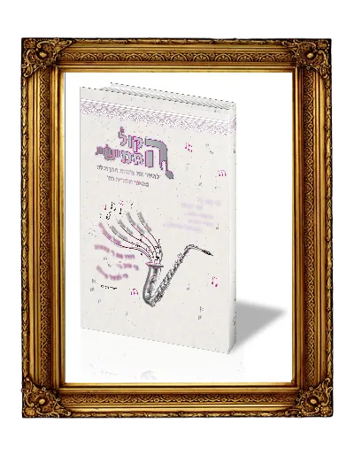

חתונה מלאת שמחה

הקול החמישי - לשמחת חתן וכלה
לחוש את ההודיה בחתונה, עם סיפורים תפילות וברכהמ"ז לנישואין
בהקמת בית יהודי יש חמשה קולות: 1.קוֹל שָׂשׂוֹן 2.וְקוֹל שִׂמְחָה, 3.קוֹל חָתָן 4.וְקוֹל כַּלָּה. 5. קוֹל אֹמְרִים: הוֹדוּ אֶת יְהוָה צְבָאוֹת. ארבעה נותן ה' כדי שאנחנו ניתן את החמישי.

הקול החמישי - לשבע ברכות
באור נפלא מלא רגשות הודיה לשבע ברכות הנישואין
ביאור קל ועממי לשבע ברכות, עם טעם מתוק של הודיה. ■ הכנה נפלאה לחתן וכלה לזכות לברכה שבשבע הברכות. ■ מזכרת של הודיה לשבת שבע ברכות.
הקול החמישי - בחתונה

רעיונות נפלאים להודיה בחתונה

השיר - לכבוד החתן בחור מעם


תעלומת הקול החמישי


הלכות שבע ברכות


להחזיר את השפע
חנוכה והקול החמישי